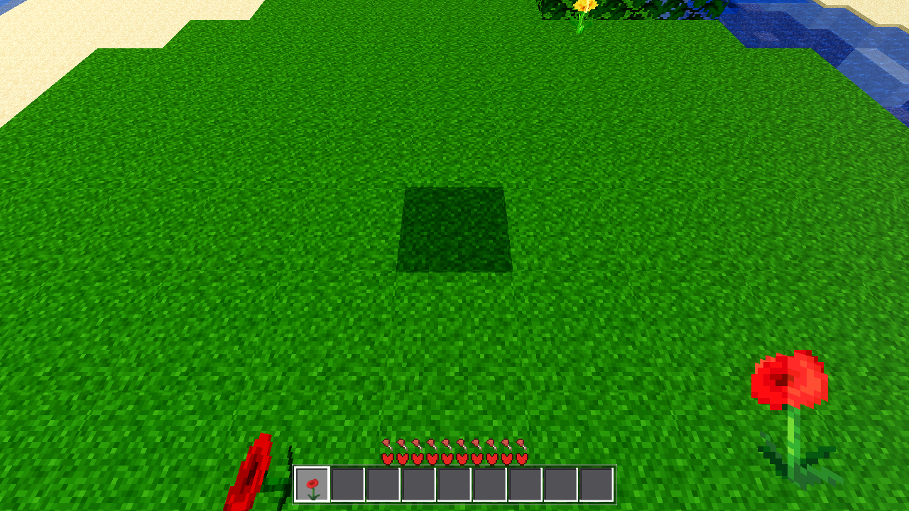
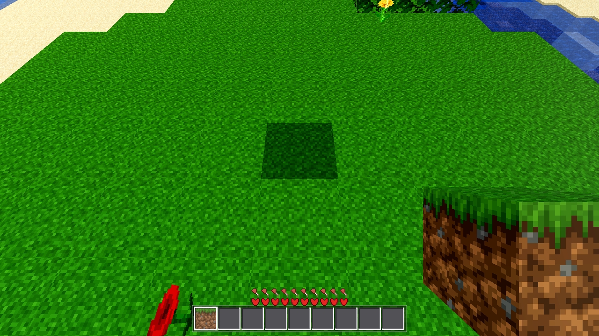
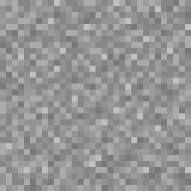
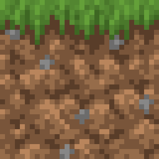
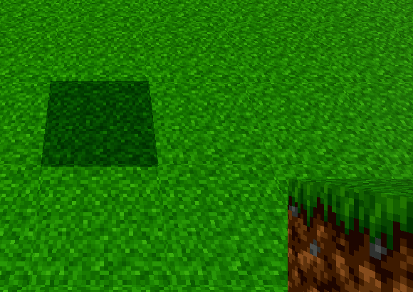
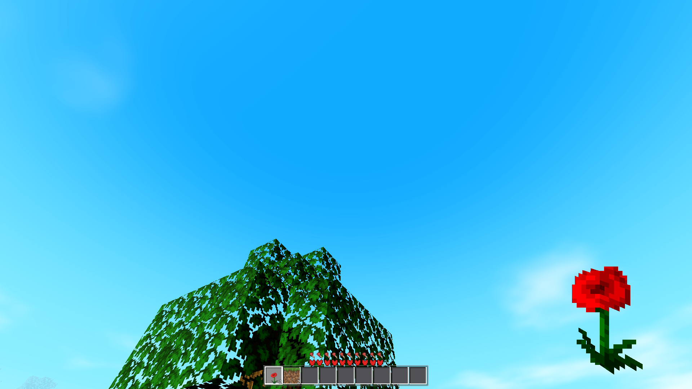
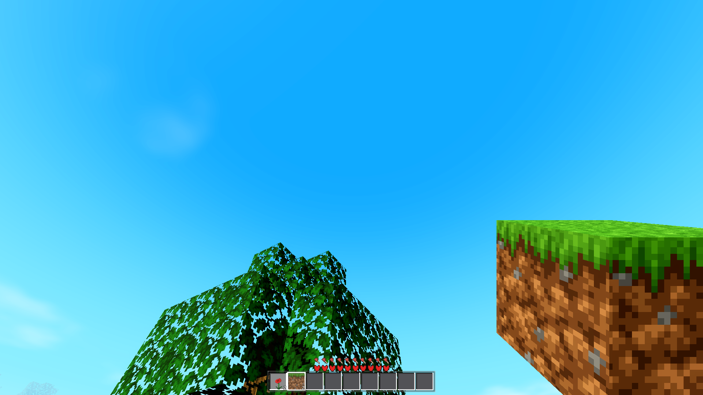

DONE 2026-08-21. All gates G1–G5 green. Zero script errors on every run.
godot/core/held_mesh.gd (class_name HeldMeshes) — pure builder, matches world/chunk.gd exactly:
corner_uv() = copy of chunk.gd _corner_uv (0.5px inner inset, / ATLAS_PX) so a held face shows the entire per-face tile, no bleeding.box_mesh(id) — 1×1×1 ArrayMesh, 12 tris / 6 faces; per-face UVs from Data.block_rect(id, "top"|"side"|"bottom") + Data.atlas_tex; per-face vertex color = face shade (VoxelMath.FACES[fi].sh) × Data.block_tint(id, face) (chunk.gd:246/249 pattern); fallback = flat per-face color when no atlas. Cached per id.cross_mesh(id) — the SAME two crossed-quads geometry world chunks emit (XQ_A/XQ_B, chunk.gd:8-9, _emit_xquad:256-286), 4 tris / 8 verts, UVs from the "top" tile (world cross uses block_rect(id,"top")), vertex color 0.9 × block_tint(id,"top") (chunk.gd:266-270), both quads double-sided.box_material() / cross_material() — StandardMaterial3D with vertex_color_use_as_albedo, full atlas + NEAREST (identical to chunk _opaque_material); cross adds TRANSPARENCY_ALPHA_SCISSOR @ 0.5 + CULL_DISABLED (chunk _flower_material:418-421). Materials rebuilt only if the atlas reference changes.godot/player/player.gd — _update_held block branch now routes: cross:true (and not thin:true) → HeldMeshes.cross_mesh/cross_material; else → HeldMeshes.box_mesh/box_material. held_box node, its 0.35 scale, position, AC-0060 sway + AC-0048 swing (all under hand_root) untouched. Tools (_setup_held_tool), held_sprite pure-items, held_fist untouched. Dead _held_mat/_held_mats removed.godot/scenes/main.gd — new AWECRAFT_LOGIC=held harness (_held_test, G3); _fpv_test block assertion upgraded from "32px region texture" to "ArrayMesh 12 faces, face-group 0 UV span == full tile rect of block_rect(3,'side')".export_presets.cfg head_include: if the page loads with ?aw=18:2|1:2, push -- + aw=… into engine.config.args after boot; main.gd _apply_aw_query() (called after start_game + _continue_slot) reads OS.get_cmdline_user_args(), gives items + selects slot 0. Desktop/headless never see it.| Gate | Command / evidence | Result |
|---|---|---|
| G1 | godot --headless --quit | 0 script errors |
| G2 | full battery: player, interact, craft, guiclick, swing, survival, combat, tint, trees, save, water, buckets, daynight, editperf, fpv, look, light, fluids + held | all green, 0 script errors each; craft + guiclick RESULT byte-identical to pre-change baselines; fpv: block_held_ok:true, region_actual [129,1] vs want [128,0] (0.5px UV inset quantization, assertion passes), known pre-existing tool_held_ok:false unchanged |
| G3 | AWECRAFT_LOGIC=held | cross_ok:true box_ok:true (RESULT below) |
| G4 | AWECRAFT_HELD=18|1 AWECRAFT_SNAPSHOT=… AWECRAFT_RADIUS=1 AWECRAFT_NO_FOG=1 (xvfb, llvmpipe) | held_flower.png = crossed-quad poppy (matches world flowers); held_block.png = grassy TOP + dirt SIDES, i.e. scaled world grass block. 0 script errors both |
| G5 | ./build_web.sh → browser 1920×1080 ?aw=18:2|1:2 | build 0; web_held_flower.png red cross poppy (region red=8958px); web_held_block.png green top 29850px + brown sides 80138px; 0 console errors, 0 page errors |
cross_18: tris=4 verts=8 tile_top=[672,0] uv_px=[673,1,704,32] (32px full tile incl. 0.5px inset — exact chunk geometry)
mat_ok=true (ALPHA_SCISSOR 0.5 + CULL_DISABLED, albedo == Data.atlas_tex)
col_ok=true (vertex color == 0.9 * block_tint(18,"top")) → cross_ok: true
box_1: tris=12
top tile [0,0] uv_px [1,1,32,32] ok:true (grass_top tile, vertex color 1.0 * TINT_GRASS_TOP → tint_top_ok)
side tile [32,0] uv_px [33,1,64,32] ok:true (dirt/grass_side tile, 0.8 * tint(1,"side") → tint_side_ok)
bottom tile [64,0] uv_px [65,1,96,32] ok:true (dirt tile)
albedo == Data.atlas_tex
scale_ok: true (0.35, unchanged) sprite_hidden: true → box_ok: true







Hotbar shows both given stacks (poppy ×2, grass ×2); key 2 selects the grass block for the second shot. Console: 0 errors.
SHADING_MODE_UNSHADED), per spec "same material the world cross/leaves use". Viewmodel lighting itself is AC-0035's job.thin:true cross blocks (torch, id 22) are world-meshed as small boxes (web thin pass, chunk.gd xtab+ttab), so the held thin path is not part of this change — torch held still uses the box builder (its "top" tile); flowers (18/19), the reported case, use the cross. Water/lava are not placeable/held as blocks, unaffected.?aw= hook first attempt failed silently: Godot web passes engine.config.args straight to main-arg parsing, where an unknown arg becomes a (ignored) project-path arg, NOT a user arg. Fixed by pushing the --/++ separator first (main.cpp: adding_user_args). This is the only reason G5 needed one extra web rebuild._fpv_test region_actual now reports the face-group 0 UV span min in atlas px (was the tile top-left) → [129,1] for stone; block_held_ok still true. No battery value that other tasks compare against changed (craft/guiclick bit-identical).block_rect(id, "top") (chunk.gd:275) — held cross matches; flowers only have a "top" tile anyway.